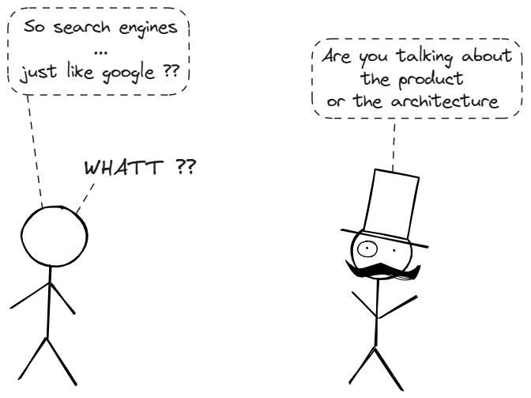
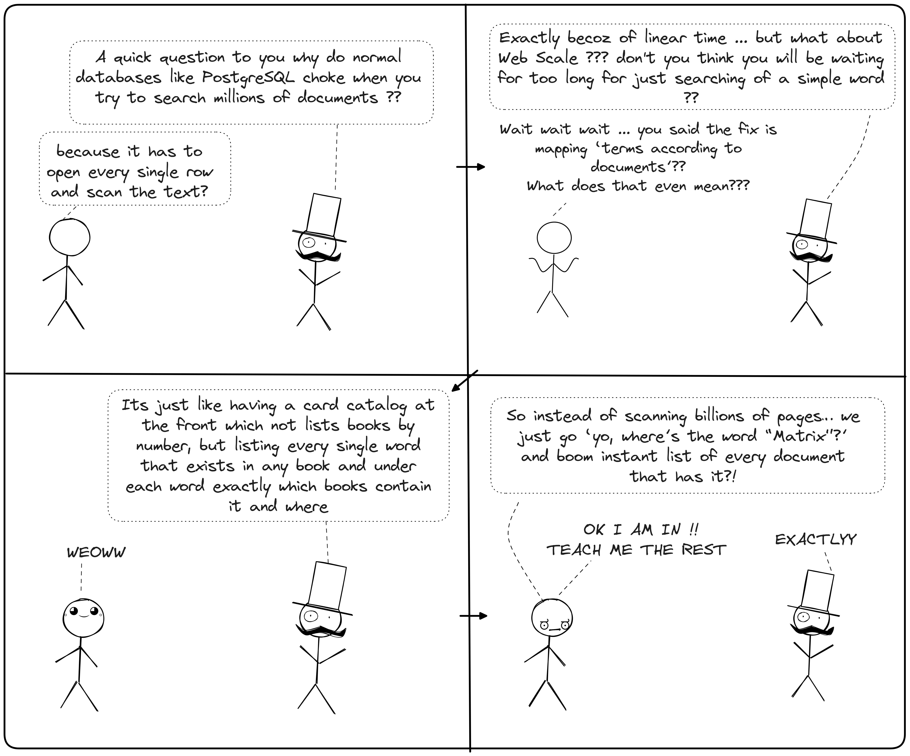
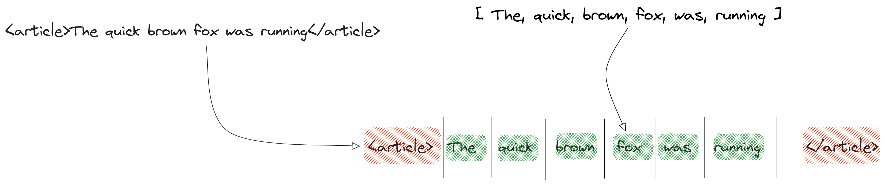
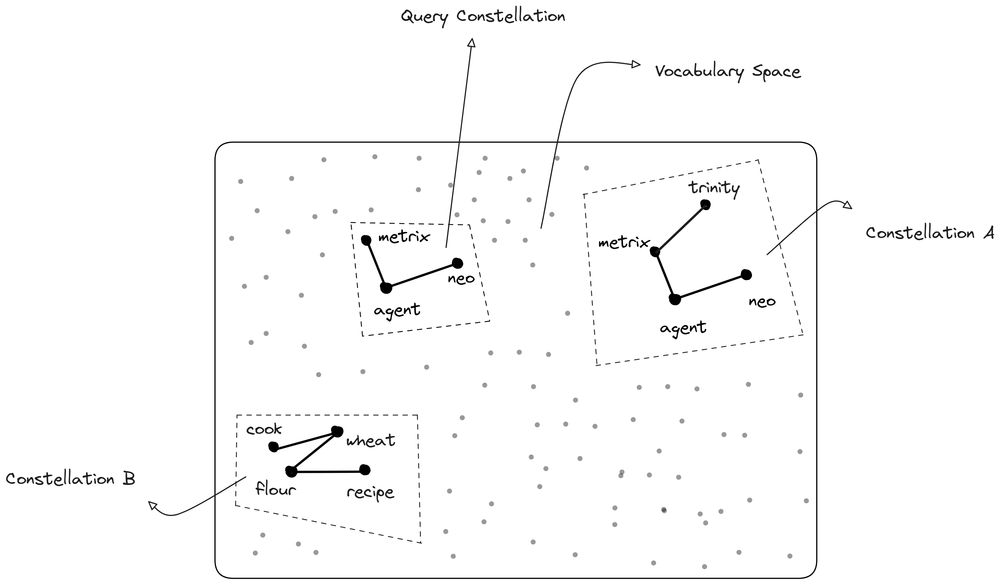
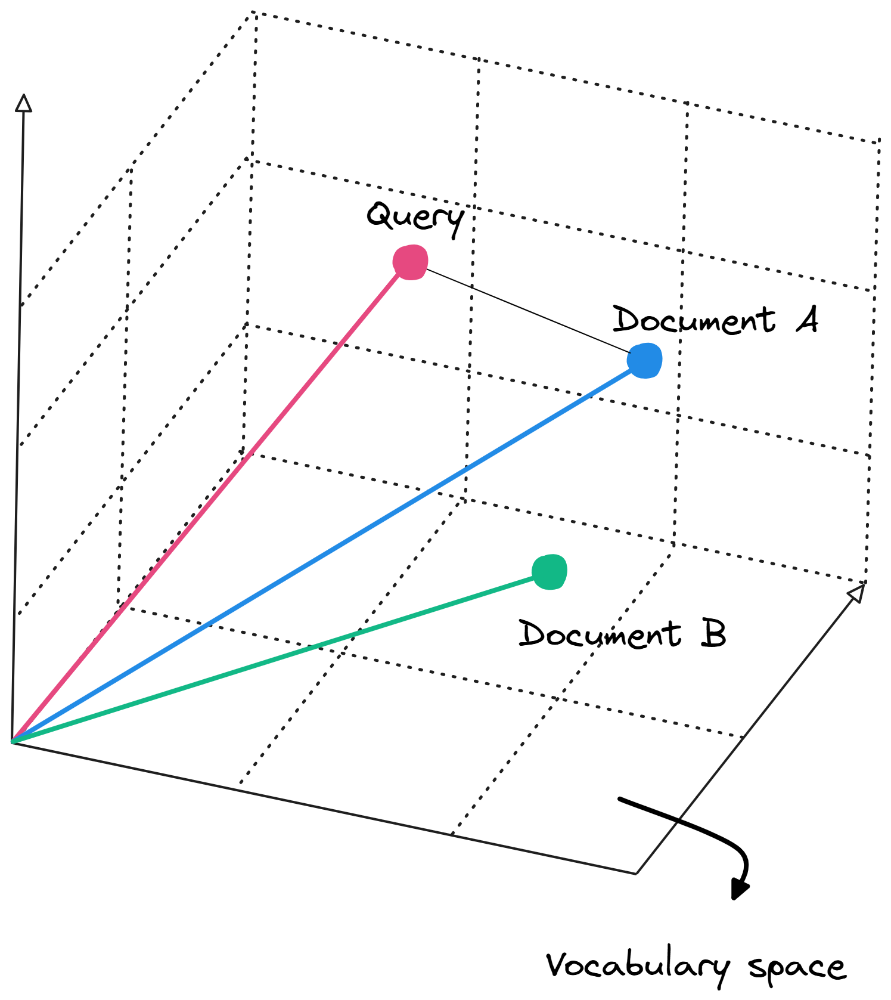

Search engines are simple to define with respect to their core job which is to return the most relevant documents for a query in milliseconds. But still it is arguably the most complex software systems in existence.

To understand the "Search" part of search engines, one must first
understand why traditional databases fail at it. In a standard relational
database (like PostgreSQL or MySQL), data is stored in rows. If you want
to find a specific word in a description column, the database effectively
has to open every single row and scan the text to see if the word exists.
In computer science terms, this is an \( O(n) \) operation which means as
my data will grow, the speed to reach that drops linearly. For a web scale
dataset this is unacceptably slow.
The solution for this is Inverted Index
Instead of mapping Documenting terms like a book's chapter, an inverted index maps the terms according to the documents.

Inverted Index consists of two components, first one is Term Dictionary which is an aplhabetized list of every unique word (term) found in entire dataset. This is often kept in memory using a Hash Map or a Trie(Prefix tree) for speed. Second one is Posting Lists for every term in the dictionary, there is an associated list of document IDs where that term appears.
This makes a search engine to query millions of documents in thee exact same amount of time it takes to query one but the questions is how does it even happen ??
When the user searches for the word "data," the engine does not scan documents. Instead it hashes the word "data" and then jumps directly to that entry in the term dictionary (an \(O(1)\) or constant time operation). Than retrieves the the posting list like [Doc1, Doc4, Doc87]
However, this raw speed relies on exact matching. A computer views "Running" and "run" as completely different binary strings. If our index is too literal, it becomes brittle. But if we just store every word, how do we handle "running" vs "run" or typos ??
So to handle the variation of human language is not by indexing instead by transforming the data before it enters the index. This process is called Analysis. When we insert text into a search engine, it doesn't just store the string. It passes the text through an Analysis Chain, a pipeline of processors that standardize the text
The Analysis Pipeline
(Character filters) The raw stream is cleaned, like the stripping HTML tags to make <"h1">Hello<"/h1"> into Hello or converting & to and. Then comes (Tokenizer) the text is chopped into discrete chunks called tokens. A standard whitespace tokenizer splits "Hello, myself Mrinal" into [Hello, myself, Mrinal]
(Tokenizers) the text is chopped into discrete chunks called tokens. A standard whitespace tokenizer splits "The quick brown fox" into [The, quick, brown, fox]

Now there are few steps which get followed for the process where the normalization happens. The tokens flow through a series of transformations
Why "CAT" != "cat != "kitten"
Without this pipeline, the byte sequence for "CAT" does not match "cat". By running both the document text and the user's query text through the same analysis chain, we ensure they meet in the middle. If the document contains "Running" and the user searches "run," the analyzer reduces both to "run," creating a match
Now we have a system that can tolerate human variation and retrieve all documents containing our terms. However, mere retrieval is not enough. If I search for "News," I might get 10 millions documents. So we can index text effectively, but how do we actually decide what results matter most ??
We decide what matters most by calculating a Relevance Score for every matching document. This is not boolean "yes/no" but a floating point number representing how well a document matches the query. Although newer engines uses machine learning (learning to rank), the foundational algorithms rely on statitical probablity
TF-IDF | Measuring the rarity
Term Frequency Inverse Document Frequency. This method quantifies how important a word is to a document within a larger collection (or corpus) by balancing two key intuition
TF (Term Frequency)
This measures how frequently a term appears in a specific document. The underlying idea is that repetition signals importance. For instance, if the search term "quantum" appears 5 times in Document A and only once in Document B, Document A is likely more relevant to a query about quantum physics. The basic formula is \[ \text{TF (t, d)} = \text{count of term t in document d} \] Variations exist, such as normalized TF to account for document lenght \[ \text{TF(t, d)} = \frac{ \text{count of t in d}}{ \text{total words in d}} \] this prevents longer documents from being unfairly favoured due to huge size.


IDF (Inverse Document Frequency)
Not all words are created equal, common ones like "the" or "and" appear
everywhere and offer little discriminatory power. IDF downweights these by
highlighting rarity. For example in a search for "The Matrix," the word
"The" is universal and useless, while "Matrix" is rarer and thus more
informative. The formula is
\[ \text{IDF(t)} = \log \frac{\text{Total number of documents in
corpus}}{\text{Number of documents containing t}} \]
The logarithm smooths the scale and adding 1 to the denominator avoids
division by zero ...
\[ \text{IDF(t)} = \log \frac{\text{Total number of documents in corpus +
1}}{\text{Number of documents containing t + 1}} \]
The final TF-IDF weight for a term in a document combines these \[ Weight(t, d) = TF(t, d) \times IDF(t) \] Higher weights indicate terms that are both frequent in the document and rare across the corpus, making them strong indicators of relevance.
Example usecase using a calculation
we have a corpus of 100 documents, and we're querying for "apple computer." The term "apple" appears in 10 documents (IDF = log(100/10) ≈ 1.0), while "computer" appears in 20 (IDF ≈ 0.7). In Document A: "apple" appears 3 times (TF=3), "computer" 2 times (TF=2). TF-IDF for "apple" = 3 × 1.0 = 3; for "computer" = 2 × 0.7 = 1.4. The document's score could be the sum or average of these, depending on the implementation.
TF-IDF weights form the foundation for representing text in a mathematical framework called the Vector Space Model (VSM). Here, each document and query is treated as a vector in a high-dimensional space, where each dimension corresponds to a unique term in the vocabulary.
We have covered how to find and rank text, but what happens when the data is too big to fit on one machine? In Part II, we will look at Distributed Search, exploring Sharding, Replication, and the consensus algorithms that keep the engine running when servers fail.
That's all from my side for the first part, I am working on part II and will be releasing it soon .... Hope I was able to add some value to your learning ^^